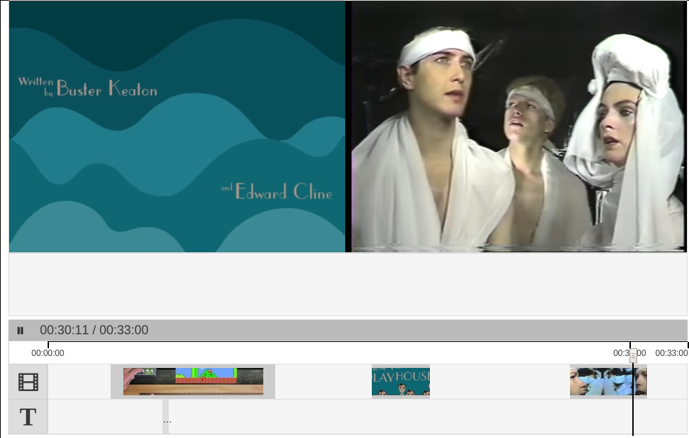

We've uncovered a problem related to volume in Juxtapose. In the following screenshot, the video still in the top right corresponds to the clip that the playhead is inside.
The volume for this video plays, as expected, on playthrough. But what happens when we pause the sequence and move the playhead slightly before the clip?
Now the state of the sequence player is paused, and you wouldn't expect anything to be happening. But the music video I've loaded in this clip has started playing over the speakers even though it's not visible. I can see how this might be happening, because of how I've implemented the secondary videos which I'll explain later. But the problem is deeper than my investigations have so far reached, so I decided to write about it. Sometimes if you just methodically go over something step by step, the answer comes to you. I remember a handful of times when I've taken a half hour to type out a StackOverflow question, only to discover the answer myself once I put the complete question into words.
In order to display different clips of YouTube and Vimeo
videos right after one another, the sequence tool
instantiates each player instance it will need as soon as
we know what video elements that sequence contains. So in
the sequence above, there are three react-player
instances. I'm using a wrapper class called
AVPlayer, in which the ReactPlayer is created.
The player gets primed (playing set to true)
a few seconds before it appears in the user's display
area, as a rough estimate to account for the time it will
take to initialize. This priming process seems to be a
piece of what causes this bug, because it doesn't occur
when the playhead is over two seconds before the next
video clip. Using the React Developer Tools browser
extension, I can see that the volume prop
passed from AVPlayer to ReactPlayer, as well as its child
YouTube component, is 0 as expected. This
shouldn't be happening, because this is exactly why I like
using a library like React: the component's props dictate
its behavior, always, and that's it. It's possible we've
uncovered a bug in react-player, so now I'm looking at
react-player's YouTube code to see how
setVolume() gets called.